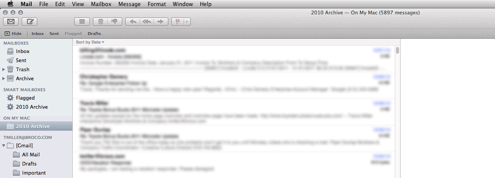

Gmail Archiving in Apple Mail
Steps for safely archiving Gmail messages with Apple's Mail.
1. Gmail Trash
Make sure deleted messages are going to Gmail's Trash.
a) Find Your Gmail Trash Folder
If there is a Trash folder under [Gmail], then your messages are not getting deleted when you delete them.
b) Use Gmail Trash folder for Trash
Select the Gmail Trash folder and in the menu bar choose: Mailbox > Use This Mailbox For > Trash
c) Confirm
Confirm that the Gmail Trash folder is now a sub-folder under your main Trash folder.
‹
›
2. Smart Mailbox
Create a smart mailbox to select the messages you want to archive from Gmail.
a) Create a new Smart Mailbox
From the menu bar choose: Mailbox > New Smart Mailbox...
b) Name the mailbox and set the first condition to search from
Choose "Message is in Mailbox" and then choose "All Mail" from under [Gmail].
c) Add another condition to limit the date range
Click the (+) button and choose "Date Received" and then choose "is in the date range".
d) Set the date range
Input a start and end date to correspond with the name of this archive.
e) Confirm
See that the new smart mailbox is shown in the left bar under "Smart Mailboxes".
f) Don't organize the mailbox by conversation
From the menu bar choose: View > Organize By Conversation. Make sure it is unchecked.
‹
›
3. Local Mailbox
Create a local mailbox to archive the Gmail messages to.
a) Create a new Mailbox
From the menu bar choose: Mailbox > New Mailbox...
b) Name the mailbox and set the location
Make sure Location is: "On My Mac".
c) Confirm
See that the new mailbox is shown in the left bar under "On My Mac".
d) Don't organize the mailbox by conversation
From the menu bar choose: View > Organize By Conversation. Make sure it is unchecked.
‹
›
4. Copy the Messages
Copy all of the messages from Gmail to your local mailbox.
a) Select All
From the menu bar choose: Edit > Select All
b) Copy the messages
From the menu bar choose: Message > Copy to > [Your local mailbox]
‹
›
5. Delete the Messages
Delete all the messages from the Smart Mailbox, which will delete them from Gmail.

a) Confirm Copy
Check that the number of messages in the Smart Mailbox and the Local Mailbox match.

b) Export
Export the local mailbox to a file that can be archived offline.

c) Select All from the Smart Mailbox
From the menu bar choose: Edit > Select All
d) Delete the messages
From the menu bar choose: Message > Move to > Trash > [Your Gmail Trash]
‹
›